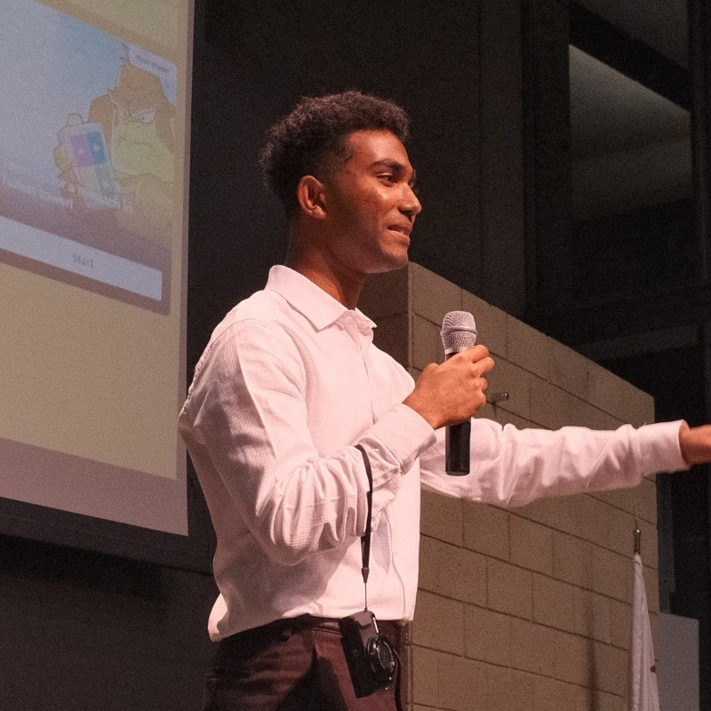

The Team
Builders Who Ship Fast


Document as you build. See what's hidden where you want to drill. Computer vision prevents workers from hitting critical infrastructure—saving $56K per incident.[1]
Workers operate semi-blind with unreliable tools. The industry loses $30B annually.[2]
A construction worker drilled into a concealed water pipe. The building's entire water supply shut down. Days of delays. Emergency repairs. Escalating costs.
MEP (Mechanical, Electrical, Plumbing) systems are invisible behind finished walls. Existing tools are expensive and unreliable.
Original blueprints show sketches and outlines—not as-built conditions. Changes during construction aren't documented.
Average utility strike: $56,000 in direct costs. Industry-wide: $30 billion annually in the US alone.[1,2]
Workers use their smartphones to photograph walls during construction—before MEP systems are concealed behind drywall.
Workers manually tag photo locations. Computer vision creates a precise spatial database of what's actually behind each wall.
When drilling later, workers scan the wall with their phone. Augmented reality overlay shows exact MEP locations—like X-ray vision.
Take photos of exposed MEP systems during construction phases. No special equipment needed.
Workers tag where each photo is taken. Computer vision maps exact positions in 3D space.
Multimodal AI processes images, identifies MEP components, and maps their 3D locations relative to finished wall surfaces.
Workers see MEP systems overlaid on their phone screen. Visual alerts prevent strikes.
Traditional methods require expensive equipment and expert interpretation. Our approach turns every smartphone into a safety tool:
Computer vision captures reality. AI understands it. Workers make informed decisions—instantly.
Our prototype demonstrates pseudo-wall scanning and MEP detection using computer vision and spatial mapping.
Spoke directly with construction workers, foremen, project managers, and facilities teams at active sites.
Workers want this right now. Every person we interviewed expressed urgent need for better MEP visibility tools.
Utility strikes cost the US construction industry $30 billion per year.[2]
This quote came from a real worker who had just experienced a costly water main strike. It's not a feature request—it's a desperate need.
$62B annual market.[5] Universities are risk-averse institutions that will pay premium to prevent costly incidents. Direct relationships with facilities teams. Clear ROI from avoiding shutdowns.
Every commercial project has MEP infrastructure. General contractors are liable for damage and delays. Our solution reduces insurance claims and project risk.
Become the standard for construction safety documentation. Every project, from residential to industrial, needs accurate as-built records.
Get in touch to learn more about BLEprint or schedule a demo of our computer vision safety platform.